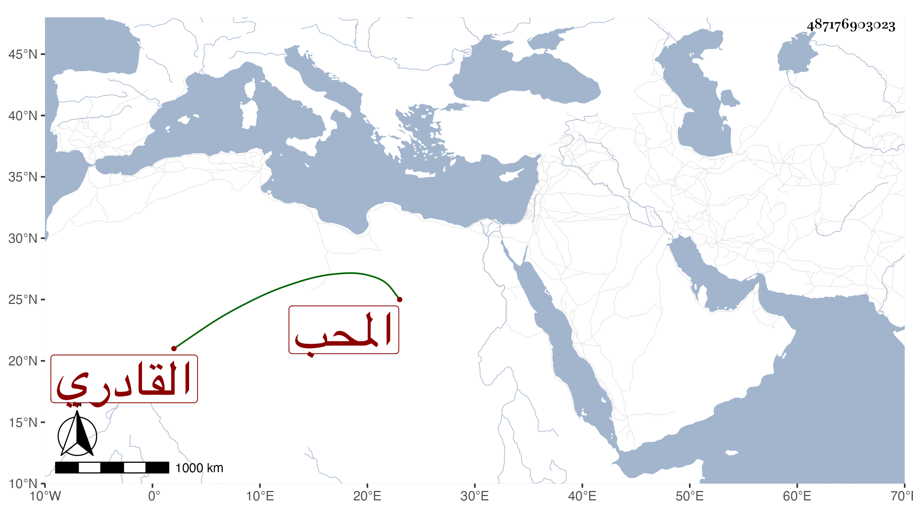

0902Sakhawi.DawLamic.ITO20230111-ara1.EIS1600.487176903023
Biography ID: 487176903023
177
خديجة ابنة محمد بن عبد الله بلكام سلمة ابنة صاحبنا المحب القادري شقيقة أبي الطاهر محمد وزينب . اعتنى بها أبوها فأسمعها أشياء منها البخاري في الظاهرية ، وأجاز لها جماعة ، وتزوجها الجلال بن الامانة فولدت له عدة أولاد تزوجت احداهن بالبدر بن حجاج والاخرى بولد صغير للشرف الانصاري وماتت تحته في طاعون سنة سبع وتسعين ، وحجت خديجة غيرة مرة وجاورت ، وهي رئيسة لها كجدتها خلطة ببيوت الامراء وخدمة بالولادة ونحوها .
